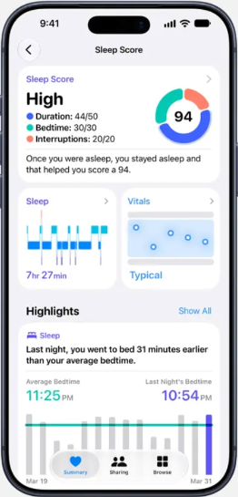

竞品拆解 · 系统级健康数据平台
Apple 健康：卡片化摘要，状态词先于数字
来源：App Store 官方截图
2026 年 10 月查看
2026 年 10 月查看

1
摘要页 · 统一卡片结构
每张卡片 = 分类色图标 + 标签 + 时间，下方大数字 + 单位，右侧迷你图。大标题 + 置顶区，用户可编辑顺序。

2
睡眠评分 · 先说结论
「High」状态词比分数 94 更醒目；分项构成用彩点列出；一句话解释评分原因；「Highlights」用一句对比句讲变化。

3
心理状态 · 连续量表
一个问题占满全屏；滑杆从「非常不愉快」到「非常愉快」，中间的抽象形状随滑动实时变形、变色。
用在本方案：① 今日首页的「养分」卡片沿用这套卡片结构（W07）；② 画像三维度先给状态词、再给等级（W11）；③ 情绪回选改为连续滑杆，步步表情随滑动变化并伴随触感（W08）。